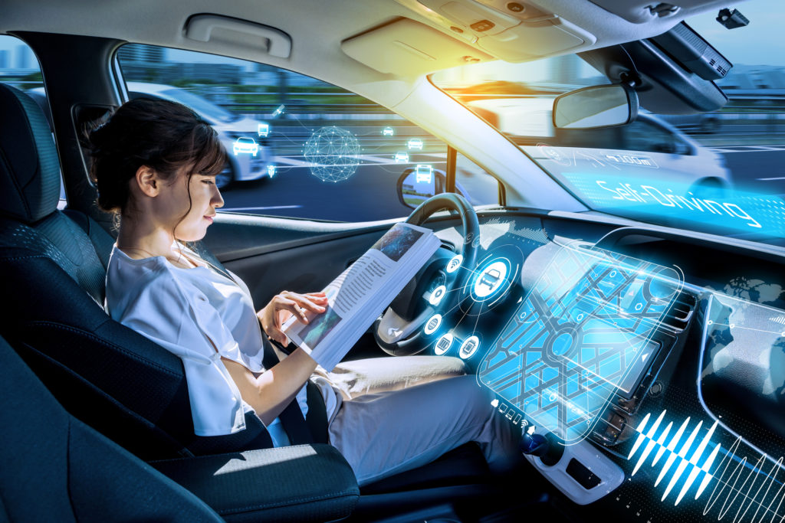

|
There has undoubtedly been a surge of interest in the technology surrounding self-driving vehicles over recent years, and ponderings as to what kind of future they could bring for society. With the advancement of self-driving technology comes several questions in dire need of an answer. For one, what would a future in which private autonomous vehicle ownership becomes commonplace mean for the overall population's ability to drive? How would the AI handle moral dilemmas - like whether to drive into a child versus an elder, had it no other choice - if we ourselves cannot collectively agree upon one answer? The aim of our group's work is to provide a deeper look into the potential outcomes of autonomous vehicles, both positive and negative, critically appraise the technology's past, present and potential future applications, while also providing personal ethical opinions on it all based on what we have discovered. |

|